Application Security PosturePostura di sicurezza applicativa
The software-composition analysis workbench: run a scan, read six charts, drill from a fleet-wide picture down to one package's fix version.
Il banco di lavoro dell'analisi della composizione software: avvia una scansione, leggi sei grafici, scendi dal quadro generale del parco fino alla versione che corregge un singolo pacchetto.
Page OverviewPanoramica read: all · scan: admin, manager, editorlettura: tutti · scansione: admin, manager, editor
A posture run collects the complete installed package inventory of each selected asset, batches it against OSV.dev and produces three things: a per-asset score, a severity-classified list of vulnerable packages, and the component records that become your SBOM. Its subtitle states the scope plainly — “Full software-composition posture per asset — installed packages vs OSV.”
Una run di postura raccoglie l'inventario completo dei pacchetti installati su ogni asset selezionato, lo confronta in blocco con OSV.dev e produce tre cose: uno score per asset, un elenco di pacchetti vulnerabili classificati per severità e i record dei componenti che diventano la tua SBOM. Il sottotitolo dichiara l'ambito senza giri di parole: «Full software-composition posture per asset — installed packages vs OSV.»
This page is the origin of most of the product's data. The same run feeds /sbom (components and licences), /findings (internal findings entering the lifecycle) and /risk (contextual re-scoring). If those pages look empty, the answer is almost always “no posture run yet”.
Questa pagina è l'origine della maggior parte dei dati del prodotto. La stessa run alimenta /sbom (componenti e licenze), /findings (finding interni che entrano nel ciclo di vita) e /risk (ricalcolo contestuale). Se quelle pagine sembrano vuote, la risposta è quasi sempre «nessuna run di postura eseguita».
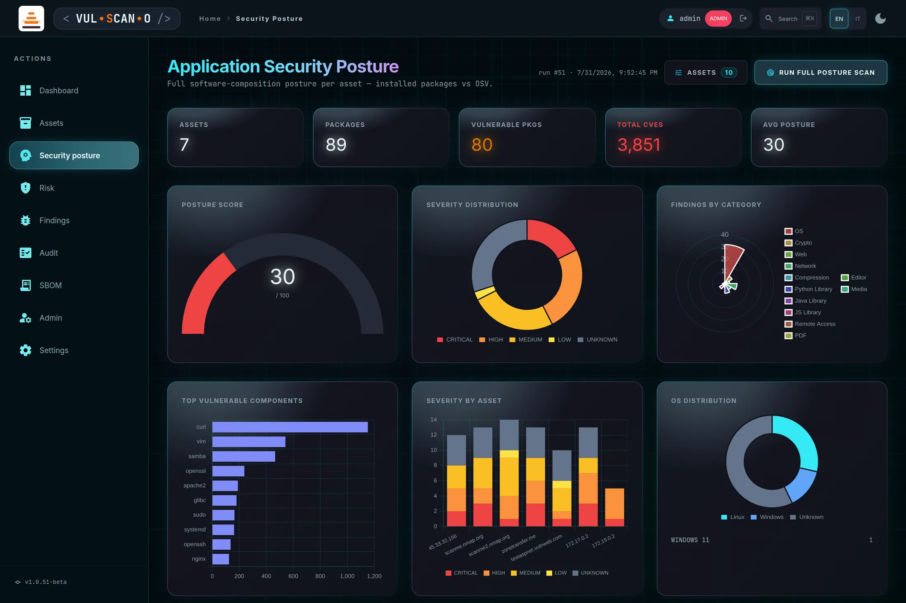
Running and comparing scansEseguire e confrontare le scansioni
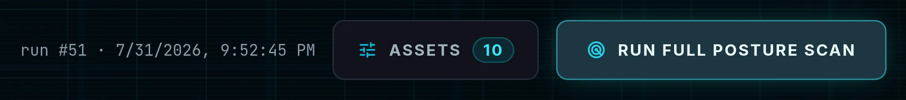
Features BreakdownDettaglio funzionalità
| ControlControllo | BehaviourComportamento |
|---|---|
| ASSETS pickerselettore | Opens the TARGET ASSETS panel: a checkbox list of the enabled inventory assets, with ALL and NONE shortcuts and a live count on the button itself. The next run is restricted to the ticked hosts — the way to re-check a handful of servers after a patch window without waiting for the whole fleet. Apre il pannello TARGET ASSETS: un elenco con caselle degli asset abilitati in inventario, con le scorciatoie ALL e NONE e un conteggio live sul pulsante stesso. La run successiva è limitata agli host spuntati — il modo per ricontrollare pochi server dopo una finestra di patch senza attendere l'intero parco. |
| RUN FULL POSTURE SCAN |
Starts the run over Server-Sent Events (GET /api/posture/scan). A progress panel appears reading “Scanning assets…” with a done/total counter and a filling bar, ending in “Scan complete”. Authenticated assets take the longest because they enumerate the entire package list.
Avvia la run tramite Server-Sent Events (GET /api/posture/scan). Compare un pannello di avanzamento con «Scanning assets…», un contatore fatti/totale e una barra che si riempie, fino a «Scan complete». Gli asset autenticati sono i più lenti perché enumerano l'intera lista dei pacchetti.
|
| Run metadataMetadati della run | Timestamp and scope of the run currently on screen, so you always know whether you are looking at fresh or historical data.Timestamp e ambito della run attualmente a schermo, così sai sempre se stai guardando dati freschi o storici. |
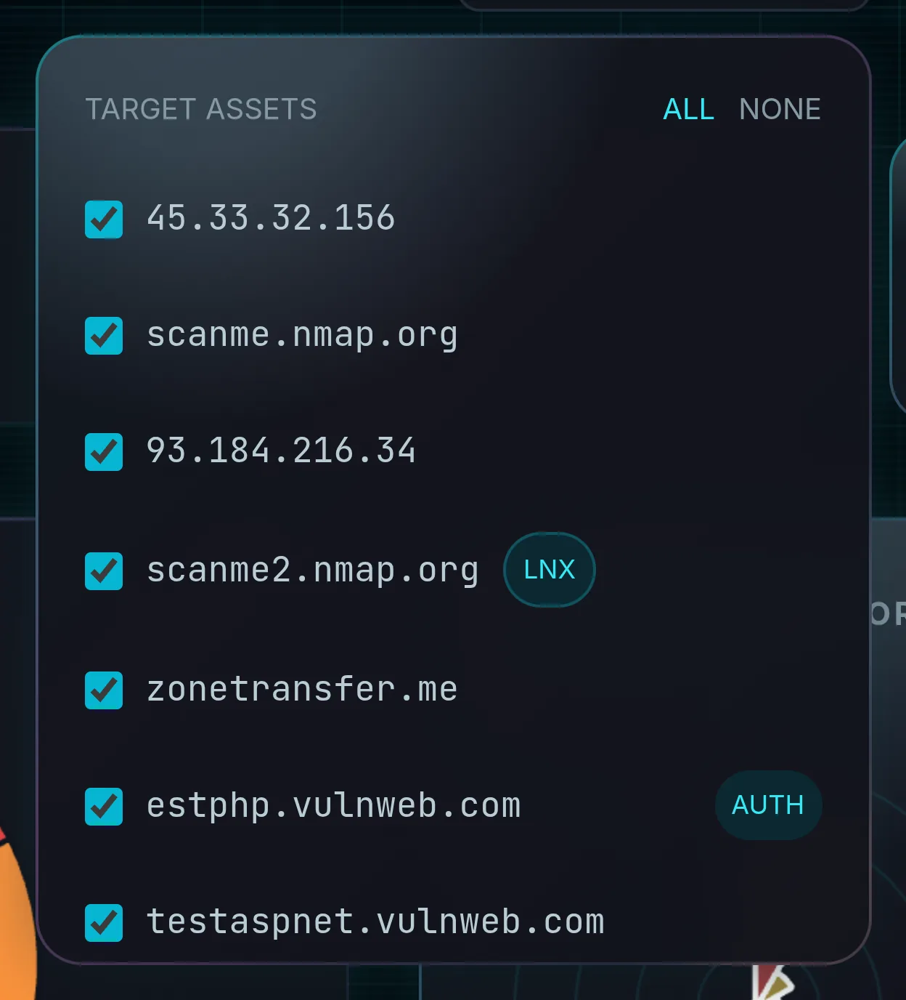
Run #id · timestamp · n CVE — and re-render every chart and table from it. That is
how you demonstrate that a patch window worked, rather than asserting it.
Confrontare le run. Ogni run viene salvata e può essere richiamata in seguito. Nelle
pagine /risk e /sbom un selettore consente di caricare
una run precedente — Run #id · timestamp · n CVE — e ridisegnare ogni grafico e tabella da essa.
È così che si dimostra che una finestra di patch ha funzionato, invece di limitarsi ad affermarlo.
KPI stripStriscia KPI
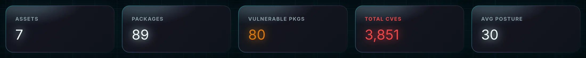
| KPI | MeaningSignificato | How to read itCome leggerlo |
|---|---|---|
| ASSETS | Hosts included in the displayed run.Host inclusi nella run mostrata. | Lower than expected? Some assets were unreachable, unauthenticated or disabled.Più basso del previsto? Alcuni asset erano irraggiungibili, non autenticati o disabilitati. |
| PACKAGES | Total installed packages inventoried across those hosts.Pacchetti installati totali inventariati su quegli host. | A few dozen means banner-only data; hundreds or thousands means real authenticated inventories.Poche decine indicano dati da solo banner; centinaia o migliaia indicano inventari autenticati reali. |
| VULNERABLE PKGS | Packages with at least one OSV match.Pacchetti con almeno una corrispondenza OSV. | The count of things to fix, before deduplication by CVE.Il numero di cose da correggere, prima della deduplica per CVE. |
| TOTAL CVES | Sum of distinct CVEs across all vulnerable packages.Somma dei CVE distinti su tutti i pacchetti vulnerabili. | Impressive but blunt — one outdated base image can produce thousands.Impressionante ma grezzo — una sola immagine di base obsoleta può produrne migliaia. |
| AVG POSTURE | Mean posture score of the run (0–100, higher is better).Score medio di postura della run (0–100, più alto è meglio). | The number the Dashboard card mirrors. Formula in Appendix C.Il numero rispecchiato dalla card della Dashboard. Formula in Appendice C. |
The six chartsI sei grafici
Each chart answers one question. They are also click-to-filter: selecting a slice or a bar applies a filter badge to the PACKAGE FINDINGS table further down, which you clear with the ✕ on the badge.
Ogni grafico risponde a una domanda. Sono anche cliccabili per filtrare: selezionando una fetta o una barra viene applicato un badge di filtro alla tabella PACKAGE FINDINGS più in basso, che si rimuove con la ✕ sul badge.
1POSTURE SCORE
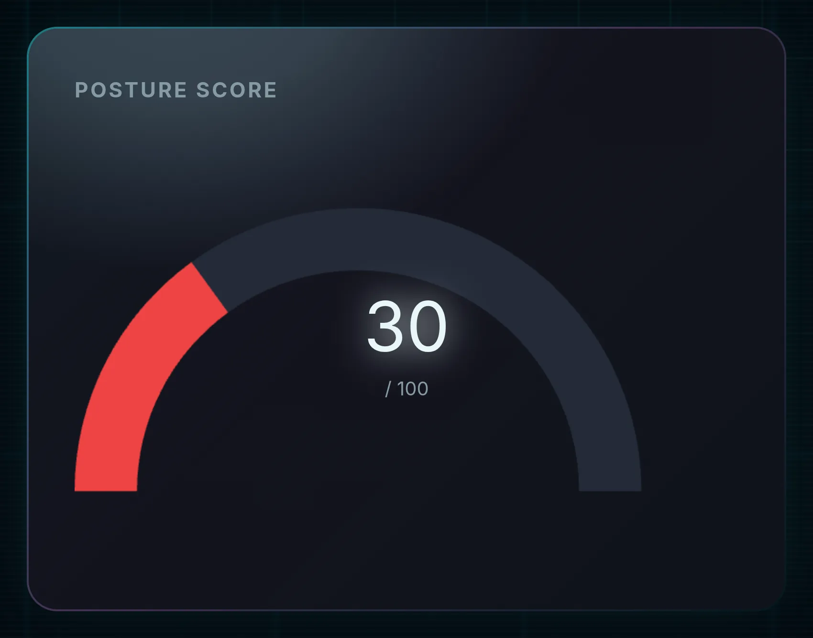
2SEVERITY DISTRIBUTION
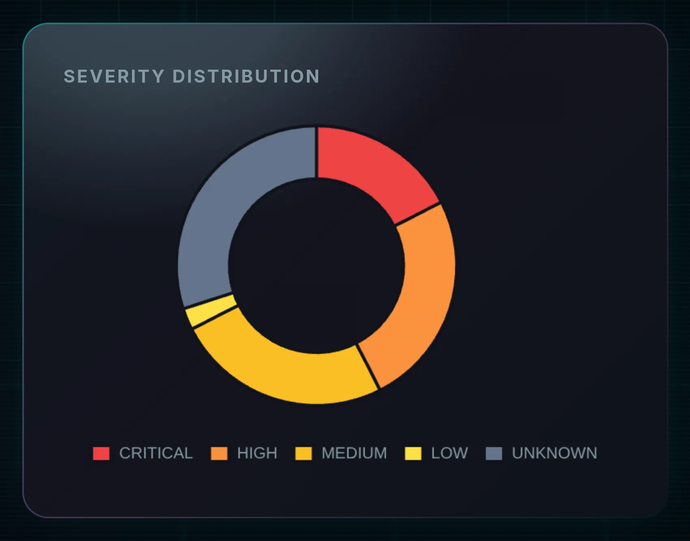
3FINDINGS BY CATEGORY
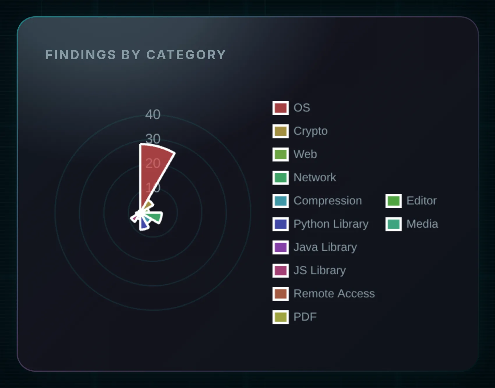
4TOP VULNERABLE COMPONENTS
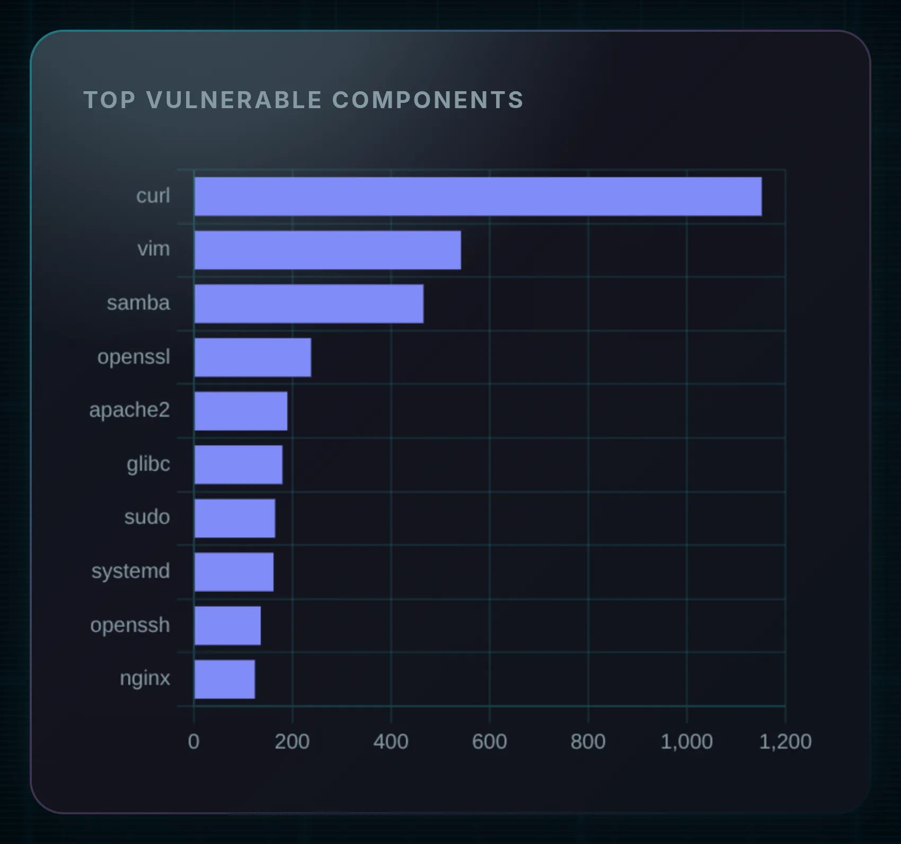
5SEVERITY BY ASSET
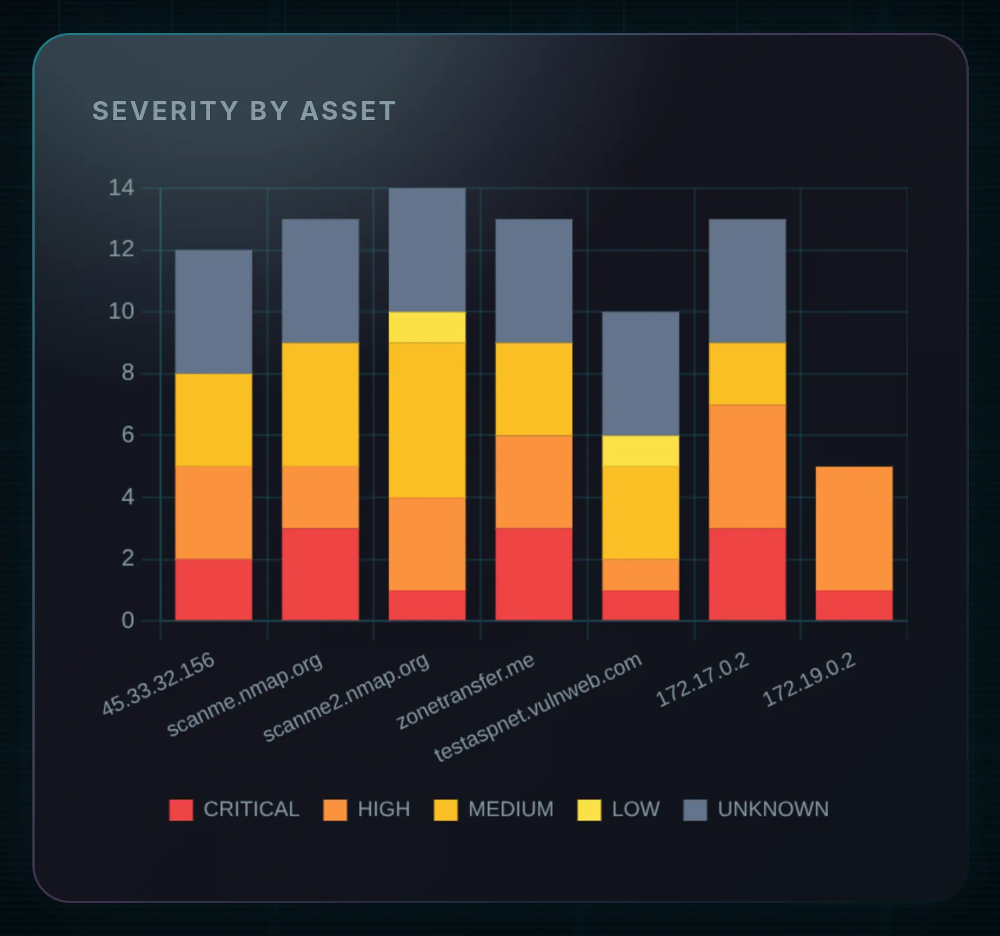
6OS DISTRIBUTION
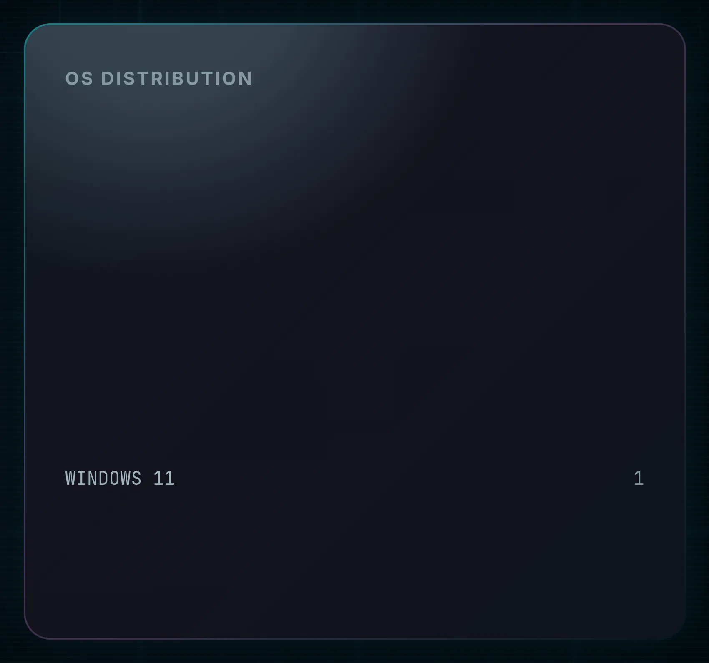
CVE visualisationsVisualizzazioni CVE
7CVE pack (bubble view)CVE pack (vista a bolle)
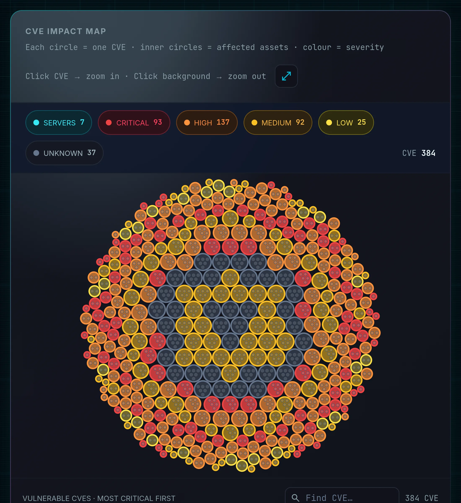
- The SERVERS picker (with ALL / NONE and a “Filter servers…” search box) limits the view to the hosts you care about.Il selettore SERVERS (con ALL / NONE e una casella «Filter servers…») limita la vista agli host che ti interessano.
- The “Find CVE…” box highlights and scrolls to a specific identifier, with a live match count — the fastest way to answer “are we affected by CVE-XXXX-YYYY?”.La casella «Find CVE…» evidenzia e porta a un identificativo specifico, con conteggio live delle corrispondenze — il modo più rapido per rispondere a «siamo esposti a CVE-XXXX-YYYY?».
- A scrollable CVE list sits beside the plot for keyboard-friendly browsing.Un elenco CVE scorrevole affianca il grafico, comodo per la navigazione da tastiera.
8CVE EXPOSURE GRAPH · 3D
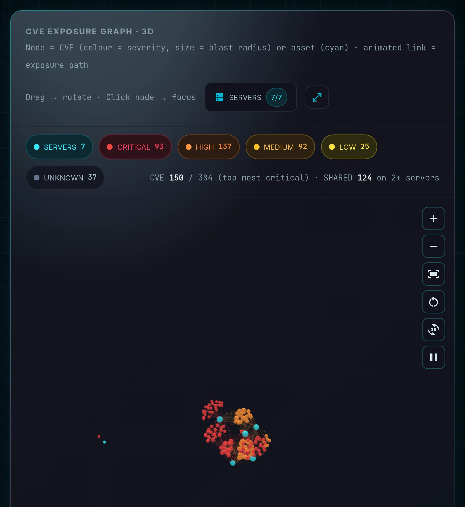
| ControlControllo | BehaviourComportamento |
|---|---|
| Drag / clickTrascina / clicca | Drag rotates the camera; clicking a node focuses it. The panel states both hints inline.Trascinare ruota la camera; cliccare un nodo lo mette a fuoco. Il pannello riporta entrambi i suggerimenti. |
| SERVERS | Its own picker restricting which hosts contribute nodes, with a count such as 7/7.Un selettore dedicato che limita gli host che contribuiscono nodi, con un conteggio tipo 7/7. |
| Zoom in / outZoom avanti / indietro | Step the camera closer or further.Avvicina o allontana la camera. |
| Fit to viewAdatta alla vista | Frames the whole graph — the first button to press when the cluster looks tiny.Inquadra l'intero grafo — il primo pulsante da premere quando il grappolo appare minuscolo. |
| Reset cameraReimposta camera | Back to the default viewpoint.Torna al punto di vista predefinito. |
| Auto-rotateRotazione automatica | Slow orbit — useful on a wall display.Orbita lenta — utile su un display a parete. |
| Pause animationPausa animazione | Freezes the force simulation so you can read labels.Congela la simulazione a forze per poter leggere le etichette. |
| ExpandEspandi | Maximises the panel to fill the page.Massimizza il pannello a tutta pagina. |
PACKAGE FINDINGS
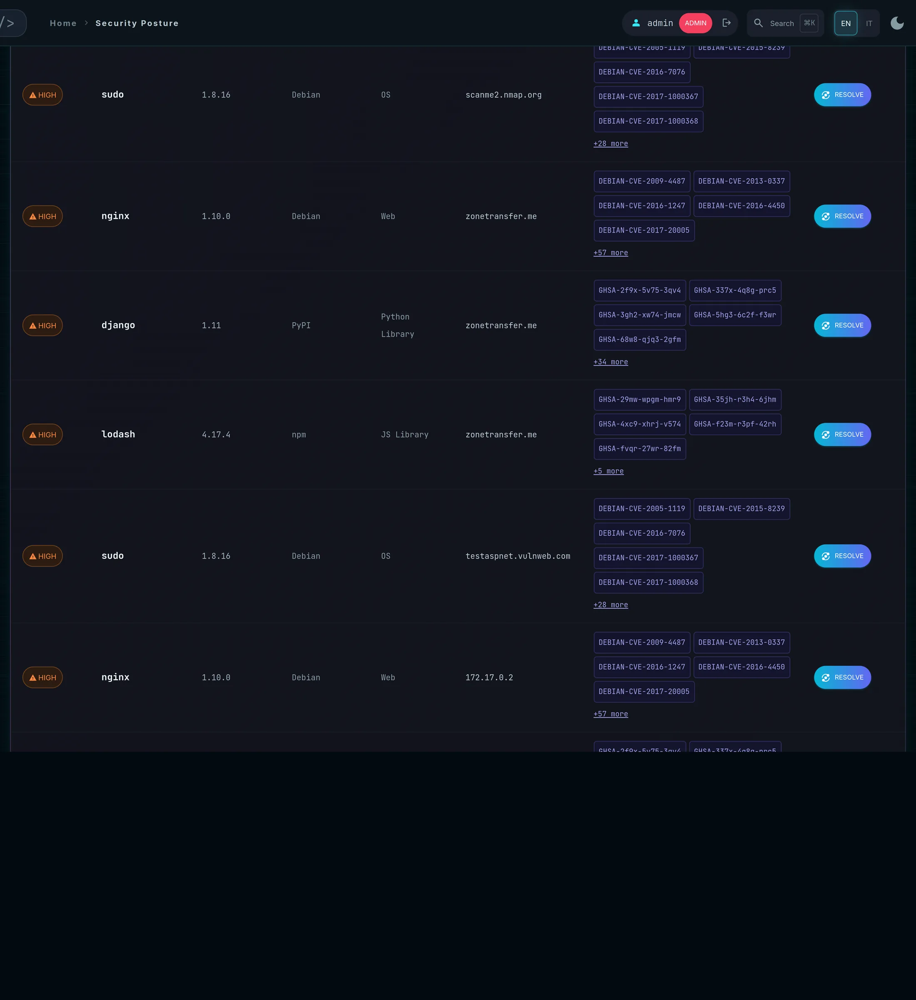
Features BreakdownDettaglio funzionalità
| ElementElemento | BehaviourComportamento |
|---|---|
| ColumnsColonne | SEVERITY · PACKAGE · VERSION · ECOSYSTEM · CATEGORY · ASSET, plus the CVE list and the RESOLVE action., più l'elenco CVE e l'azione RESOLVE. |
| SearchRicerca — “Filter package, CVE, asset…” | Instant client-side filter across every column.Filtro istantaneo lato client su tutte le colonne. |
| Filter badgeBadge di filtro | Shows the filter currently applied by a chart click; the ✕ clears it.Mostra il filtro applicato da un clic su un grafico; la ✕ lo rimuove. |
| CSV / XLS | Export the findings exactly as currently filtered — the artefact to attach to a change ticket.Esportano i finding esattamente come filtrati — l'allegato da mettere in un ticket di modifica. |
| PagerPaginatore | Pagination for large result sets.Paginazione per insiemi di risultati ampi. |
| Empty stateStato vuoto | “No posture data yet. Run a scan.”«No posture data yet. Run a scan.» |
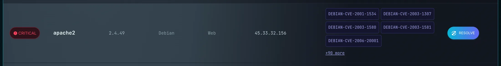
9RESOLVE — the fix planneril pianificatore di fix
The panel introduces it plainly: “Click RESOLVE to compute, via OSV.dev, the fixed version of every CVE affecting the package: the result is the minimum version that resolves them all. CVEs without a published fix are counted separately (unfixed).”
Il pannello lo introduce senza giri di parole: «Click RESOLVE to compute, via OSV.dev, the fixed version of every CVE affecting the package: the result is the minimum version that resolves them all. CVEs without a published fix are counted separately (unfixed).»
Mechanically it calls GET /api/posture/fixplan?package=…, which returns the minimum
version that clears every CVE affecting the installed one, plus a separate count of CVEs with no
published fix. A full-page animation — labelled QUANTUM VERSION RESOLVER — plays while it computes.
Meccanicamente chiama GET /api/posture/fixplan?package=…, che restituisce la versione
minima che risolve ogni CVE riguardante quella installata, più un conteggio separato dei CVE senza
fix pubblicata. Durante il calcolo scorre un'animazione a tutta pagina etichettata
QUANTUM VERSION RESOLVER.
10Where the answer comes fromDa dove viene la risposta
No single database covers a mixed estate, so the resolver queries sources in cascade and every result
states which one produced it — a fix version without a provenance is an assertion nobody can check.
The source appears as a coloured chip next to the version, in the resolver overlay, and as a
Fix_Source column in the CSV/XLS export.
Nessun database singolo copre un parco misto, quindi il resolver interroga le fonti in cascata e ogni
risultato dichiara quale l'ha prodotto — una fix version senza provenienza è un'affermazione che
nessuno può verificare. La fonte compare come chip colorato accanto alla versione, nell'overlay del resolver e
come colonna Fix_Source nell'export CSV/XLS.
| SourceFonte | CoversCopre | Why it is in the chainPerché è nella catena |
|---|---|---|
| OSV | Package ecosystems: Debian, Ubuntu, PyPI, npm, Maven, crates.io…Ecosistemi di pacchetti: Debian, Ubuntu, PyPI, npm, Maven, crates.io… | Exact version-range matching, no API key. First choice wherever the package has an ecosystem.Match esatto sui range di versione, nessuna API key. Prima scelta ovunque il pacchetto abbia un ecosistema. |
| MSRC | Microsoft products only: Windows, Edge, Defender, Office…Solo prodotti Microsoft: Windows, Edge, Defender, Office… | The only source publishing KB numbers. On Windows the real remediation is “install KB5087538”, not “reach build X” — so for Microsoft products MSRC is asked before NVD. KB chips in the cell link straight to the Microsoft update page.L'unica fonte che pubblica i numeri KB. Su Windows la remediation reale è «installa la KB5087538», non «arriva alla build X» — perciò per i prodotti Microsoft si interroga MSRC prima di NVD. I chip KB nella cella portano direttamente alla pagina dell'aggiornamento Microsoft. |
| NVD | Everything else, matched by CPE — Notepad++, PuTTY, 7-Zip, VLC, Wireshark…Tutto il resto, via CPE — Notepad++, PuTTY, 7-Zip, VLC, Wireshark… | Fills the gap OSV leaves on Windows desktop software. Requires no key; a free one raises the rate limit from 5 to 50 requests per 30 s (Settings → NVD).Colma il buco che OSV lascia sul software desktop Windows. Non richiede chiavi; una gratuita alza il rate limit da 5 a 50 richieste per 30 s (Impostazioni → NVD). |
notepad-plus-plus, don_ho and notepad_plus_plus, and the CVEs hang off
only one of them), so pinning a vendor would return zero on a product that has thirteen — a false negative,
the worst possible outcome here. The vendors actually matched are shown in the chip tooltip.
MSRC is indexed over a monthly window (default: last 3 releases, configurable): it is
authoritative for “which build do I need”, partial for “how many CVEs does this product have in total”. The
covered window is in the tooltip too.
Due limiti onesti da conoscere prima di citare un numero. NVD viene interrogata via CPE
con vendor jolly: lo stesso prodotto vive sotto più nomi vendor (Notepad++ compare come
notepad-plus-plus, don_ho e notepad_plus_plus, e le CVE sono attaccate
solo a uno di essi), quindi fissare un vendor restituirebbe zero su un prodotto che ne ha tredici — un falso
negativo, l'esito peggiore possibile qui. I vendor davvero corrispondenti sono nel tooltip del chip.
MSRC è indicizzata su una finestra mensile (default: ultime 3 pubblicazioni, configurabile):
è autorevole su «a quale build devo arrivare», parziale su «quante CVE ha in tutto questo prodotto». Anche la
finestra coperta è nel tooltip.
| ResultEsito | MeaningSignificato |
|---|---|
| upgrade X | The minimum version clearing every CVE that affects the installed version. Only CVEs matching your version and ecosystem are counted, so the figure is the smallest upgrade that actually helps. La versione minima che elimina ogni CVE riguardante la versione installata. Contano solo le CVE che corrispondono alla tua versione e al tuo ecosistema, quindi la cifra è il più piccolo aggiornamento realmente utile. |
| no fix available | OSV knows the package but publishes no fixed version for the CVEs affecting it. Mitigate; do not wait for a version bump. OSV conosce il pacchetto ma non pubblica una versione corretta per le CVE che lo riguardano. Mitiga, non aspettare un cambio di versione. |
| not indexed |
No configured source lists this package. The tooltip names the sources that were queried, so it is not a dead end. Retrying will not change the outcome. Note that the app deliberately does not ask OSV without an ecosystem as a last resort: for a name like putty OSV would answer with the Linux packages of the same name, and offering a Mageia package version as the upgrade for a Windows install would be a wrong remediation instruction.
Nessuna fonte configurata elenca questo pacchetto. Il tooltip dice quali fonti sono state interrogate, quindi non è un vicolo cieco. Ritentare non cambierà l'esito. Nota che l'app di proposito non interroga OSV senza ecosistema come ultima risorsa: per un nome come putty OSV risponderebbe con i pacchetti Linux omonimi, e proporre una versione di pacchetto Mageia come aggiornamento per un'installazione Windows sarebbe un'istruzione di remediation sbagliata.
|
| > X |
Some CVEs only declare the last affected version, not the one that fixes them. The real fix sits above X, so the version shown may not be enough. Treat it as a floor, not an answer.
Alcune CVE dichiarano solo l'ultima versione affetta, non quella che le corregge. La fix reale sta sopra X, quindi la versione mostrata può non bastare. Trattala come un limite inferiore, non come una risposta.
|
| approximate | The finding carried no ecosystem, so the query could not be scoped to one. The result may refer to same-named packages on other platforms — check it before acting. Il finding non aveva un ecosistema, quindi la query non ha potuto restringersi. Il risultato può riferirsi a pacchetti omonimi di altre piattaforme — verificalo prima di agire. |
| error — retry later | A genuinely transient failure: network, timeout, or an OSV server error. This one is worth retrying. Un guasto davvero transitorio: rete, timeout o errore del server OSV. Questo vale la pena ritentarlo. |
Procedures and expected outcomesProcedure e risultati attesi
How It WorksCome funziona
- Open Security posture from the drawer.Apri Security posture dal drawer.
- Click ASSETS and choose your targets — ALL for a full sweep, or a subset for a quick re-check after patching.Clicca ASSETS e scegli i target — ALL per una passata completa, o un sottoinsieme per un ricontrollo rapido dopo le patch.
- Press RUN FULL POSTURE SCAN and follow the progress bar.Premi RUN FULL POSTURE SCAN e segui la barra di avanzamento.
- On “Scan complete”, read the KPI strip, then TOP VULNERABLE COMPONENTS — that bar chart is your patch shortlist.Con «Scan complete», leggi la striscia KPI, poi TOP VULNERABLE COMPONENTS — quel grafico è la tua lista corta di patch.
- Click a severity segment to filter PACKAGE FINDINGS down to, say, critical only.Clicca un segmento di severità per filtrare PACKAGE FINDINGS, ad esempio solo critical.
- For each package you intend to patch, press RESOLVE and note the minimum safe version and the unfixed count.Per ogni pacchetto che intendi correggere, premi RESOLVE e annota la versione minima sicura e il numero di CVE non corretti.
- Export CSV/XLS for the change ticket, or move to /findings to assign and track the work with SLAs.Esporta CSV/XLS per il ticket di modifica, oppure passa a /findings per assegnare e tracciare il lavoro con gli SLA.
- After the patch window, run again and compare with the previous run in /risk.Dopo la finestra di patch, riesegui e confronta con la run precedente in /risk.
Expected OutcomeRisultato atteso
The gauge shows a concrete posture score, every chart is populated, PACKAGE FINDINGS lists one row per vulnerable package per asset, and RESOLVE returns a specific target version such as “upgrade to ≥ 1.1.1w — resolves 6 CVEs, 1 unfixed”. The same run is now visible in /sbom, /risk and /findings.
If nothing appears: either no run exists yet, or the selected assets were unreachable or unauthenticated — check the ACTIVE column in /assets before blaming the scan.
Il tachimetro mostra uno score di postura concreto, tutti i grafici sono popolati, PACKAGE FINDINGS elenca una riga per pacchetto vulnerabile per asset e RESOLVE restituisce una versione obiettivo precisa, del tipo «upgrade to ≥ 1.1.1w — resolves 6 CVEs, 1 unfixed». La stessa run è ora visibile in /sbom, /risk e /findings.
Se non compare nulla: o non esiste ancora alcuna run, o gli asset selezionati erano irraggiungibili o non autenticati — controlla la colonna ACTIVE in /assets prima di dare la colpa alla scansione.